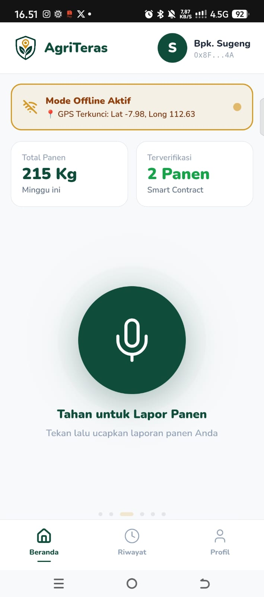

Infrastruktur Publik Digital berbasis inovasi voice-first AI dan arsitektur private blockchain untuk mitigasi regulasi pasar ekspor EUDR dan proteksi anti-greenwashing.

Regulasi Uni Eropa menuntut pembuktian rantai pasok bebas deforestasi melalui geolokasi presisi berupa poligon koordinat absolut yang sulit dipenuhi petani tradisional secara mandiri.
Kegagalan dalam memverifikasi asal-usul lahan memicu pengalihan paksa komoditas ke pasar alternatif dengan standar rendah, mengeliminasi premi harga, serta merusak kesejahteraan petani.
Tingginya asimetri informasi antara hulu dan hilir menciptakan celah manipulasi dokumen simbolis yang mendisrupsi kepercayaan serta memotong akses langsung ke rantai perdagangan bilateral.
Membongkar hambatan literasi digital melalui antarmuka perintah suara dialek lokal untuk input data volume panen dan aktivitas perawatan harian.
Memverifikasi keabsahan laporan dengan mencocokkan rasio luas poligon lahan terhadap data produktivitas historis daerah untuk menekan manipulasi data.
Menjamin keaslian dokumen tanpa risiko perubahan data sepihak dengan mekanisme konsensus cepat bersubsidi negara tanpa biaya transaksi bagi petani.
Masukkan kode identitas unik kopi (Hash ID) untuk mensimulasikan apa yang dilihat pembeli atau bea cukai saat memindai kode QR kemasan kopi AgriTeras.
ID Blok Blockchain: 0x7ffd504a79b29104c8f2b3394b9bbd
Produsen Hulu: Kelompok Tani Harapan Jaya (Bpk. Sugeng)
Koordinat Spasial Lahan: Lat -8.2435, Long 112.7564 (Bebas Deforestasi Satelit)
Hasil Central Testing: Bebas Residu Kimia Sintetis (Lolos Tes Rapid Kit Gudang Koperasi)
*Data diproses secara aman melalui eksekusi smart contract otomatis dari pangkalan data terdistribusi.